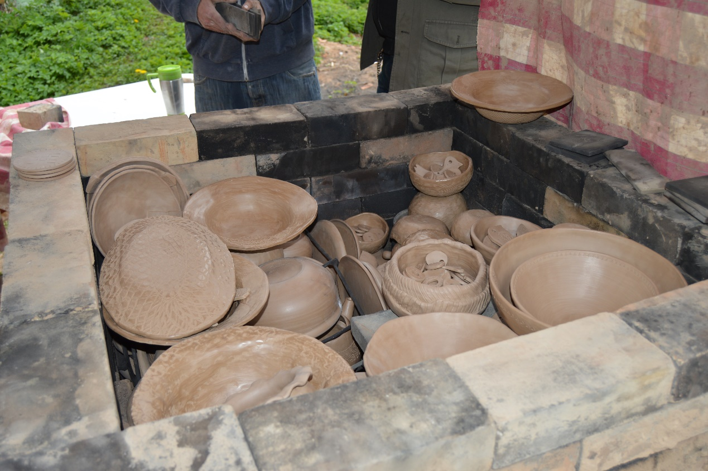
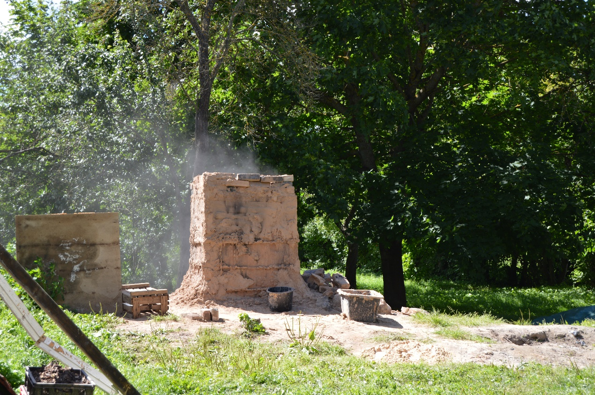
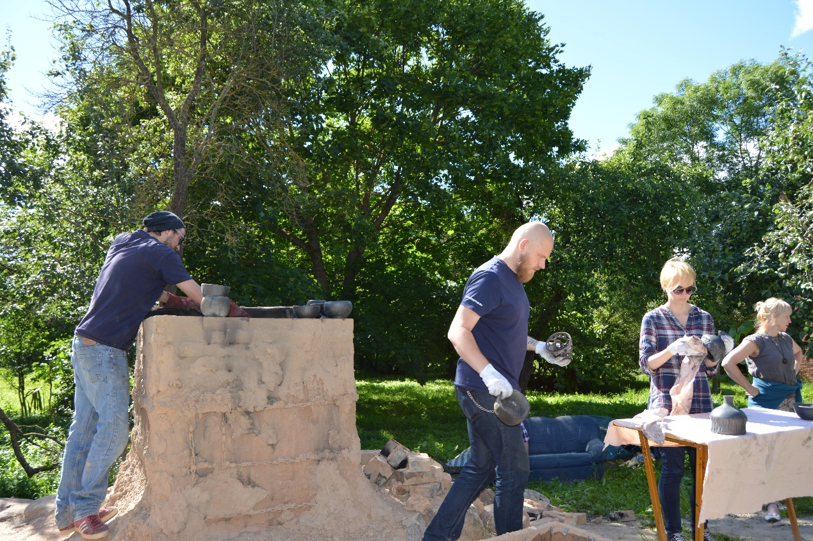

Kapelleru nama dārzā atrodas melnās keramikas ceplis. Tajā ~ 1100 C° temperatūrā tiek apdedzināti trauki, lampu abažūras, rotaslietu detaļas, dekori, vides objekti. Viss process ilgst 3 dienas.
Pirmajā dienā notiek trauku krāmēšana ceplī.
Tad seko ~ 12—15 stundu kurināšanas process.
Trešajā dienā karstie izstrādājumi tiek ņemti ārā no cepļa, noslaucīti un iesmērēti ar eļļas un vaska maisījumu.
